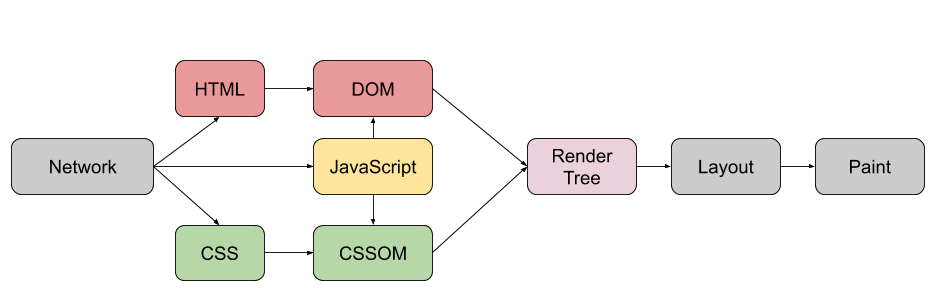
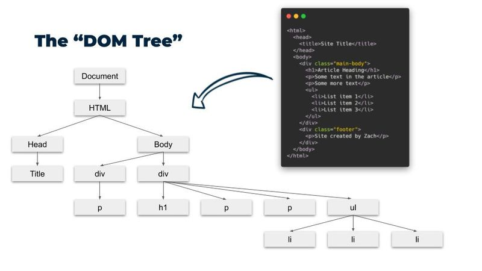
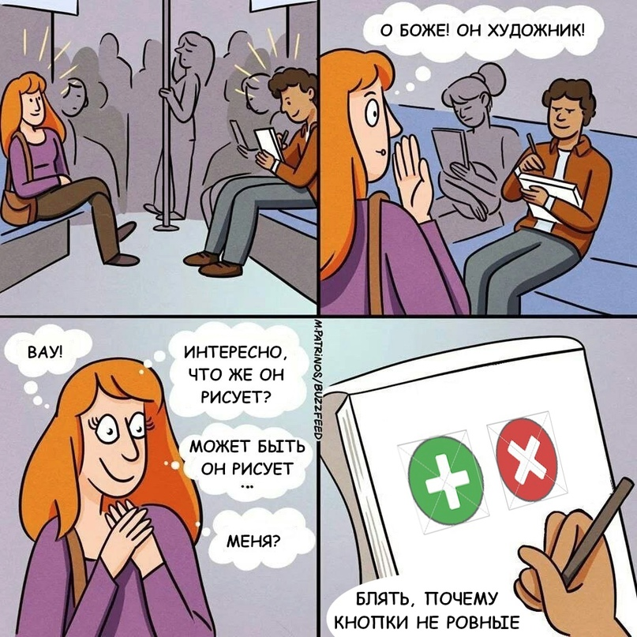

2.html
<h1>Заголовок</h1> <p>Обычный <span>текст</span></p> <div>Блочный контейнер</div> <ul><li>Элемент списка</li></ul> <a href="#">Ссылка</a> <img src="logo.png" alt="Логотип">
h1…h6, p, div, ul/lispan, a, imgp {}, класс .box {}, id #logo {}color, font-size, background, margin/padding, border, position<style> в head, внешний файл <link><html> → <head>/<body>
5.html
<div id="page_wrapper">
<p class="text">Первый абзац</p>
<p class="text">Второй абзац</p>
</div>
<script>
const pageWrapper = document.getElementById('page_wrapper');
const firstParagraph = document.querySelector('.text');
const allParagraphs = document.querySelectorAll('.text');
console.log(pageWrapper); // div с id="page_wrapper"
console.log(firstParagraph); // первый p с class="text"
console.log(allParagraphs); // ВСЕ p с class="text" (NodeList)
</script>
querySelector — первый подходящий элементquerySelectorAll — все (NodeList)6.html
<ul>
<li class="lfr-nav-item">Первый элемент</li>
<li class="lfr-nav-item">Второй элемент</li>
<li class="lfr-nav-item">Третий элемент</li>
</ul>
<script>
const selectedItem = document.querySelector('.lfr-nav-item');
console.log(selectedItem.parentElement); // <ul>
console.log(selectedItem.nextElementSibling); // второй <li>
console.log(selectedItem.previousElementSibling); // null
console.log(selectedItem.parentElement.children); // все <li>
</script>
parentElement, children, first/lastElementChildprevious/nextElementSibling8.js
const element = document.querySelector('#yui_patched');
element.textContent = 'Университет КАИ'; // как текст
element.innerHTML = '<strong>Университет</strong> КАИ'; // как HTML
element.setAttribute('data-id', '123');
const id = element.getAttribute('data-id');
console.log(id);
element.classList.add('new-class');
element.classList.remove('new-class');
element.classList.toggle('active'); // добавит или удалит
⚠ Не вставляйте в innerHTML пользовательский ввод — XSS-уязвимость.
7.js
const pageWrapper = document.querySelector('#page_wrapper');
// Прямое изменение стилей (через style.* — camelCase!)
pageWrapper.style.backgroundColor = 'black';
pageWrapper.style.color = '#9b41d4';
pageWrapper.style.fontSize = '20px';
// Через класс — предпочтительнее
pageWrapper.classList.add('highlighted');
// .highlighted { color: magenta; background-color: #000; font-size: 20px; }
9.js
// Создаем новый элемент
const newDiv = document.createElement('div');
newDiv.textContent = 'Новый div';
newDiv.classList.add('box');
// Добавляем в конец body
document.body.appendChild(newDiv);
// Вставляем перед существующим элементом
const existingElement = document.querySelector('#existing');
document.body.insertBefore(newDiv, existingElement);
// Клонируем элемент (deep копия)
const clonedDiv = newDiv.cloneNode(true);
document.body.appendChild(clonedDiv);
10.js
const elementToRemove = document.querySelector('#toRemove');
// Современный способ (ES6)
elementToRemove.remove();
// Старый способ: через родителя
const parent = elementToRemove.parentElement;
parent.removeChild(elementToRemove);
element.remove() — просто и современноremoveChild() — если элемент нужно перевесить, а не потерять11.js
const button = document.querySelector('#myButton');
button.addEventListener('click', function(event) {
console.log('Кнопка была нажата!');
console.log(event); // объект события
});
// Удалить можно ТОЛЬКО ту же функцию (по имени)
function handleClick() {
console.log('Клик!');
}
button.addEventListener('click', handleClick);
button.removeEventListener('click', handleClick);
click, mouseover/outkeydown, keyupDOMContentLoaded13.js
const link = document.querySelector('a');
link.addEventListener('click', function(event) {
event.preventDefault(); // не переходим по ссылке
console.log(`Тип: ${event.type}`);
console.log(`Целевой элемент: ${event.target}`);
console.log(`Координаты: ${event.clientX}, ${event.clientY}`);
});
// Всплытие: клик всплывает вверх по дереву
document.body.addEventListener('click', () => {
console.log('Клик на body!');
});
12.js
// Скрипт ждёт, пока DOM построился
document.addEventListener('DOMContentLoaded', function() {
console.log('DOM загружен!');
});
// События мыши
const div = document.querySelector('#myDiv');
div.addEventListener('mouseover', function() {
this.style.backgroundColor = 'red';
});
div.addEventListener('mouseout', function() {
this.style.backgroundColor = '';
});
// События клавиатуры
document.addEventListener('keydown', function(event) {
console.log(`Нажата клавиша: ${event.key}`);
});
14/manifest.json
{
"manifest_version": 3,
"name": "KAI to DARK",
"version": "1.0",
"description": "Добавляет кнопку для переключения темного режима",
"permissions": ["activeTab"],
"content_scripts": [
{
"matches": ["https://kai.ru/*"],
"js": ["content.js"],
"run_at": "document_idle"
}
]
}
Загрузка: chrome://extensions → Developer mode → Load unpacked.
14/content.js (упрощённо)
function toggleDarkMode() {
const pageWrapper = document.getElementById('page_wrapper');
if (!pageWrapper) { console.log('Элемент не найден'); return; }
const currentBg = pageWrapper.style.backgroundColor;
if (currentBg === 'black') {
pageWrapper.style.backgroundColor = ''; // вернуть оригинал
} else {
pageWrapper.style.backgroundColor = 'black';
}
}
function createToggleButton() {
const buttonContainer = document.querySelector('.box_links');
const button = document.createElement('div'); // 🌙
button.textContent = '🌙';
button.addEventListener('click', toggleDarkMode);
buttonContainer.appendChild(button);
}
if (document.readyState === 'loading') {
document.addEventListener('DOMContentLoaded', createToggleButton);
} else {
createToggleButton();
}
14/content.js — эталон для лабыquerySelector*-селектор — сложный
<table> и флекс — вёрстка блоков<form> / <input> — на следующей теме